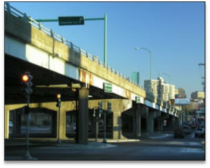

Success Stories
Tracking in Action
Easing Community Concerns About Effects of Toxic Chemicals on Children's Health Issues
Toxic Vapor at Children's Recreation Site Worries Parents
Environmental factors, including exposure to toxic chemicals, can negatively affect children's health. Trichloroethylene (TCE) exposure, for example, is potentially linked to autoimmune effects and congenital heart defects in children. Environmental testing in Dracut, Massachusetts, showed that TCE was present in the indoor air at a site where children had batting practice for baseball. Although the batting cage facility was immediately moved, residents expressed concern about their children's exposure to TCE during the years when the facility was in use.
Tracking Data Aids Risk Evaluation
The Massachusetts Tracking Program reviewed information about possible children's health outcomes related to TCE exposure. They decided to evaluate pediatric Type 1 diabetes, an autoimmune disorder, and certain heart defects associated with exposure to TCE. Tracking Program staff analyzed state data over a period of years to determine if there were increases in Type 1 diabetes and certain heart defects in the Dracut community.
Tracking Provides Answers for Concerned Families
Because Tracking program data were readily available, it was quickly established that the Dracut children, compared with children in other parts of the state, did not have an increased risk for pediatric Type 1 diabetes or heart defects associated with TCE exposure. The Dracut Board of Health shared this information with the residents to address concerns about their children's health. Also, tracking staff attended meetings to help answer questions from residents. "We're grateful to the Massachusetts Department of Public Health's Bureau of Environmental Health for providing important information from the Tracking Program in the fact sheet that helped us allay residents' concerns about exposure to substances found on the site," says Tom F. Bomil, Director of the Dracut Health Department.
To protect others from possible TCE exposure, efforts to clean up the site have included demolishing one building and sealing floors and adding new air intakes and exhausts in other buildings.
Tracking Data Helps Inform Decisions About Transportation Projects
Law Requires Transportation Plans to Consider Health Effects
Transportation projects, like road and bridge construction, can affect the health of people living nearby. The 2009 Massachusetts Transportation Reform Law required the development of methods for health impact assessments (HIAs) for use in all state transportation plans. HIAs can show potential effects of transportation projects on the health of state residents, especially vulnerable populations like children or the elderly, and provide support for transportation projects that benefit public health. Gathering health information and data is essential to an HIA but can be difficult and time-consuming if data are hard to find.
Tracking Data Useful for Health Impact Assessments
The Massachusetts Bureau of Environmental Health (BEH) coordinated with the state Department of Transportation (DOT) for the first ever HIA mandated by law for a proposed project to de-elevate the aging McGrath Highway in East Somerville. They asked the MA Tracking Program for help because the state tracking network has easy-to-access health and environment data which could be readily incorporated into the HIA. The tracking program provided data on cancer, pediatric asthma and hospitalizations for asthma and heart disease. The HIA using data from the tracking network showed that project alternatives were a major public health improvement to the elevated roadway. You can read the full report at http://www.mass.gov/eohhs/gov/departments/dph/programs/environmental-health/health-impact-assessments.html
Transportation Decision Protects Residents' Health
Tracking data informed the decision to recommend two specific alternatives of the three proposed for the original de-elevation plan. As a result, the selected plans for East Somerville meet the transportation needs of the area while providing maximum protection to the health of the area residents. The DOT describes the tracking program as a valuable and efficient resource for transportation-related HIAs and they recommend that their contractors and partners use the tracking program when completing HIAs.
Investigating Parents' Concerns About Childhood Cancer
What is the problem?
In Winchester, MA, unusually heavy rains can cause the Aberjona River to rise several feet. The river water spills over onto the ball field and playground areas of Ginn Field, a neighborhood park, and leaves behind sediment. Residents worried the sediment might contaminate the surface soil in the park. They also had concerns about herbicide applications on the field. Because of these issues, parents feared that their children might get cancer from playing in the park.
What did Tracking do?
At the request of concerned residents and the Winchester Board of Health, Massachusetts Tracking staff investigated parents' concerns about childhood cancer. They used cancer data from the state tracking network to evaluate the pattern of cancer in children. Tracking staff also investigated herbicide use and contaminants in the river water and sediment to determine what children using the field might be exposed to.
Improved public health
In January 2012, the state health department shared its findings in a report to the community and the Board of Health. The report showed that the number of new cases of childhood cancers for Winchester was similar to state trends. This information helped reassure Winchester parents and the Board of Health that touching or unintentionally eating small amounts of soil at Ginn Field would not be expected to make people sick. In addition, the Town of Winchester and the state have begun work to deepen the channel in this section of the Aberjona River as part of a series of projects to lessen the effects of flooding in the area.
Informing Policymakers and Protecting Community Health

What is the problem?
The Town of Norwood's Board of Health asked for help to decide whether to allow construction of a new asphalt plant within the town limits Asphalt production releases several dangerous pollutants into the air. These pollutants are known to cause some cancers. For people living nearby, the pollutants might also aggravate respiratory conditions like asthma and chronic obstructive pulmonary disease.
What did Tracking do?
The Massachusetts Tracking Program looked at available state tracking data for childhood asthma and rates of asthma hospital stays. The tracking program also evaluated potential health outcome patterns related to emissions from the asphalt plant. The data showed that Norwood residents may be at higher risk of health problems from air pollutants compared with the rest of the state. The tracking program recommended that town leadership request additional information from the asphalt company. The program also encouraged the company to consider ways to reduce emissions.
Improved public health
Data from the state tracking network informed policymakers about the potential effects of asphalt production on public health. Ultimately, based in part on the data and recommendations provided by the Massachusetts Tracking Program, Norwood's zoning board denied the permit required for the asphalt plant.
Examining the Relationship Between Cancer Rates and Proximity to a Nuclear Power Plant

What is the problem?
Franklin County residents expressed concern about the number of new cases of cancer in their towns because they are close to the Vermont Yankee Nuclear Power Plant. This plant is less than 5 miles from the Massachusetts state border.
Nuclear power plants produce ionizing radiation. Exposure to radiation has been associated with certain cancers such as bone, brain, central nervous system, thyroid, leukemia, and multiple myeloma.
What did Tracking do?
The tracking program reviewed available cancer data for five cancer types with possible associations to radiation. The data covered a span of 23 years for 17 Massachusetts communities located within a 20-mile radius of the power plant. They did not find any unusual patterns for cancer in Franklin County.
Improved public health
The Massachusetts Tracking Program used data from the state's tracking network to address community concerns about cancer risks. They shared their findings with the community in a report. Over time, the tracking program has noticed a decrease in the number of questions they receive related to this power plant.
Because data are readily available on the tracking network, answering inquiries like this one take less time and resources. This ensures that public health responses are efficient and economical.
Collaborating with Federal Agencies to Improve Public Health

What is the problem?
The U.S. Environmental Protection Agency (USEPA) asked the Massachusetts Tracking Program to evaluate lead levels in surface soil at the former Agawam Sportsman Club site. EPA wanted to find out whether the amount of lead in the soil posed a risk to young children or to others who used the area.
High amounts of lead in surface soil can pose serious health concerns if exposures.
What did Tracking do?
The Massachusetts Tracking Program evaluated surface soil sampling results for the site. The tracking program also looked at available data on blood lead levels (BLLs) in children who lived or had lived near the site.
Lead was detected in the soil in amounts higher than EPA screening levels. But, the actual BLLs among the tested children were low. The tracking program also found that the number of high BLLs in the area of the former sportsmen's club was similar to other areas.
Improved public health
Though BLLs among children living near the site were not as high as expected, the EPA took action to reduce possible contact with the contaminated soil.
Specifically, the EPA removed soil where needed and installed soil-erosion control devices next to a nearby stream.